Transferência de arquivos: hospedagem via FTP e upload no servidor
A publicação de uma aplicação web é o passo final e essencial para disponibilizar seu
conteúdo na internet, permitindo que usuários em qualquer lugar do mundo possam acessá-lo.
No processo de publicação, a transferência de arquivos para o servidor é uma das etapas mais
importantes, pois garante que o conteúdo esteja disponível para o público. Para tornar esse
processo mais eficiente e seguro, utiliza-se um conjunto de protocolos e ferramentas que
facilitam essa comunicação entre o ambiente de desenvolvimento (local) e o servidor
(remoto).
Um dos métodos mais utilizados para essa transferência é o FTP (file
transfer protocol), que permite o envio e o recebimento de arquivos entre um
computador e um servidor.
Neste conteúdo, serão explorados a forma como o FTP funciona, suas aplicações na
hospedagem de sites e as ferramentas mais usadas para transferir arquivos
para um servidor. Você aprenderá também as melhores práticas e terá a oportunidade
de praticar esses conhecimentos, transferindo arquivos e publicando uma
aplicação web.
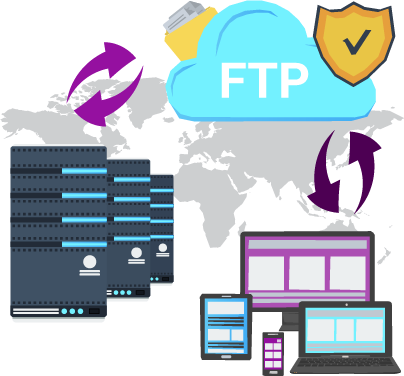
Com esses conhecimentos, você estará pronto para realizar publicações de sites e
aplicações
com confiança e segurança, dando um passo importante para atuar no ambiente profissional de
hospedagem e manutenção de aplicações web.
Transferência de arquivos
A publicação de um website não é apenas sobre a criação do conteúdo e da estrutura
da página; é também sobre garantir que esses arquivos estejam disponíveis em um servidor
de forma organizada e segura, para que possam ser acessados pelos visitantes. Com uma
transferência eficiente e organizada, o desenvolvedor consegue atualizar, corrigir ou
melhorar o website, sempre que necessário, mantendo a acessibilidade e
funcionalidade da página para os usuários.
A transferência de arquivos é o processo de copiar ou mover arquivos de um local para
outro. No contexto da publicação de websites, essa transferência ocorre entre o
computador local, no qual o desenvolvedor trabalha, e o servidor de hospedagem, no qual
os arquivos do site serão armazenados – também chamado de servidor remoto. Para
tornar esse processo eficiente e seguro, utilizam-se protocolos de transferência de
arquivos, como o FTP, um dos mais comuns e amplamente usados; o SFTP
(SSH file transfer protocol), que adiciona uma camada de segurança criptografada
baseada no SSH (secure shell); e o FTPS (file transfer protocol
secure), que utiliza criptografia TLS/SSL (transport layer security/secure
sockets layer) para proteger os dados durante a transferência.
FTP
O FTP é um protocolo de comunicação que permite o envio e o recebimento de
arquivos entre
dois sistemas conectados à rede, geralmente entre um computador local e um
servidor
remoto. Ele foi desenvolvido para facilitar a comunicação e a transferência de
arquivos
de forma prática e rápida.
O FTP opera utilizando uma arquitetura cliente-servidor, em que o cliente inicia
a
conexão e controla as ações, enquanto o servidor responde às solicitações e
realiza a
transferência dos arquivos.
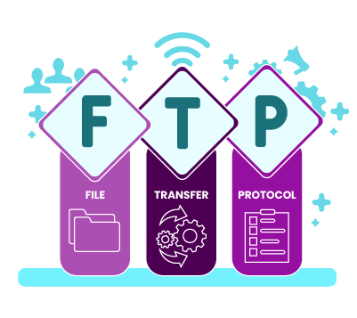
Para se conectar a um servidor FTP, são necessários três dados principais:
Clique ou toque para visualizar o conteúdo.
Endereço do servidor de hospedagem, geralmente fornecido pelo
provedor de
hospedagem, que identifica onde os arquivos serão enviados.
Credenciais de acesso ao servidor FTP, garantindo que apenas
usuários
autorizados possam realizar transferências de arquivos.
O FTP tradicionalmente utiliza a porta 21 para
transferências-padrão.
Uma vez conectado, o cliente pode enviar (upload) ou receber
(download)
arquivos do servidor, além de realizar outras operações, como renomear, mover e
deletar
arquivos remotamente.
SFTP
O SFTP é uma extensão do FTP que adiciona uma camada de segurança ao
processo de
transferência, sendo frequentemente preferido para transferências que
exigem
maior proteção. Ele utiliza o protocolo SSH para criptografar os dados e
proteger as credenciais e os arquivos transferidos. Dessa forma, mesmo
que os
dados sejam interceptados, eles estarão protegidos por criptografia.
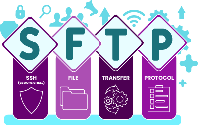
FTPS
O FTPS é outra versão segura do FTP, que implementa criptografia por meio
dos
protocolos SSL ou TLS, os mesmos utilizados em sites seguros –
HTTPS
(hypertext transfer protocol secure). Diferentemente do SFTP, que
utiliza
o SSH, o FTPS adiciona segurança ao FTP tradicional ao criptografar a
conexão,
protegendo os dados e as credenciais transmitidas.
Para usar o FTPS, normalmente é necessário que o servidor e o cliente suportem
SSL/TLS.
Assim como o FTP, o FTPS utiliza a porta 21, mas pode requerer portas adicionais
para
transferência de dados segura.
Além de protocolos, utilizam-se programas específicos que simplificam e
automatizam esse
processo de transferência de arquivos. Um exemplo popular é o FileZilla,
uma
ferramenta gratuita e de código aberto que atua como cliente FTP.
FileZilla
O FileZilla é uma aplicação gratuita e de código aberto que atua como cliente
FTP,
permitindo a transferência de arquivos entre o computador local e os servidores
remotos.
Reconhecido por sua interface intuitiva e seus recursos robustos, o FileZilla é
amplamente utilizado por desenvolvedores web e administradores de
sistemas para
gerenciar, organizar e publicar sites e aplicações na internet.
Além do FTP tradicional, ele suporta também o SFTP, que utiliza criptografia SSH,
e o
FTPS, que utiliza criptografia SSL/TLS. Essas opções tornam o FileZilla uma
escolha
versátil e segura para lidar com diferentes necessidades de publicação e
gerenciamento
de arquivos em servidores.
Instalação
Para começar a utilizar o FileZilla, é necessário fazer o download e
instalar o
software em seu computador. O processo é simples e rápido:
Faça o download: acesse o site oficial do FileZilla
e faça o
download da versão mais recente. Certifique-se de baixar a versão
“FileZilla Client”, pois há também uma versão “FileZilla Server”,
destinada à
configuração de servidores FTP.
Observe o GIF demonstrando o processo de download
(FileZilla, [s. d.]):
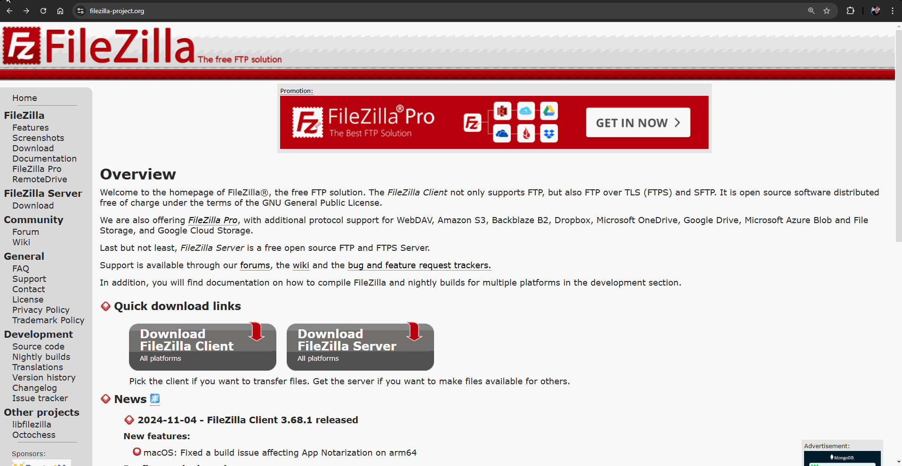
No GIF, há o site oficial do
FileZilla
aberto em um navegador de internet na tela inicial. O mouse se posiciona
sobre o
botão Download FileZiila Client e leva a uma nova tela. Nessa tela, o
mouse se
posiciona sobre o botão verde Download FileZilla Client localizado
abaixo do
texto “Windows (64bit x86)” e clica nele. Uma janela flutuante aparece
sobre a
tela com o texto “FileZilla Client: Select your edition” e uma tabela
comparando
os recursos entre “FileZilla (Free)”, “FileZilla + Manual”, “FileZilla
Pro”,
“FileZilla Pro + CLI” e no rodapé da tabela há um botão verde para cada
opção,
sendo um botão Download e três botões Purchase. O mouse se posiciona
sobre o
botão Download de “FileZilla (Free)” e o download do instalador é
iniciado. Uma
nova janela flutuante aparece apresentando a mensagem “Thank you for
downloading
FileZilla”.
Para o processo de download, no site oficial do FileZilla,
deve-se clicar em
Download FileZiila Client, que levará a uma nova tela. Nessa tela,
clique no
botão verde Download FileZilla Client localizado abaixo do texto
“Windows (64bit
x86)”. Uma janela flutuante aparecerá sobre a tela com o texto “FileZilla
Client: Select your edition” e uma tabela comparando os recursos entre
“FileZilla (Free)”, “FileZilla + Manual”, “FileZilla Pro”, “FileZilla Pro +
CLI”; no rodapé da tabela, há um botão verde para cada opção, sendo um botão
Download e três botões Purchase. Clique em Download de
“FileZilla (Free)” e o
download do instalador será iniciado. Uma nova janela flutuante
aparece
apresentando a mensagem “Thank you for downloading FileZilla”.
Instale: após o download, execute o instalador e siga as
instruções
na tela. A instalação permite escolher opções de configuração
adicionais, como
atalhos e definições de idioma.
O instalador do FileZilla pode apresentar propagandas para promover
softwares
de terceiros. Essa é uma prática comum em instaladores de softwares
gratuitos para que se mantenham gratuitos. Se você não tem interesse
em
instalar os softwares promovidos, basta selecionar a opção
Decline
para
recusar a instalação.
Observe o GIF demonstrando o processo de instalação do
FireZilla:
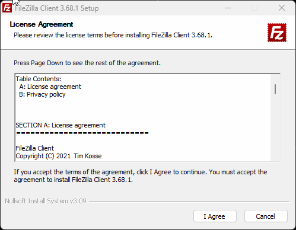
No GIF, há todo o processo de
instalação do FileZilla no sistema operacional Windows. O GIF começa
apresentando a primeira tela do instalador do FileZilla, em que se tem a
tela
License Agreement e o contrato da licença logo abaixo. O mouse clica na
opção I
Agree para concordar com os termos e leva à próxima tela. Após carregar
os
dados, a próxima tela é renderizada apresentando uma oferta opcional
para baixar
o software Kanbana. Nessa tela, o mouse seleciona a opção Decline e
depois o
botão Next é revelado e clicado. Na tela seguinte, tem-se Choose
Installation
Options, em que se pode selecionar algumas configurações de instalação.
Há a
opção Anyone who uses the computer (all users está selecionada e o mouse
clica
no botão Next. Na tela seguinte, Choose Component”, as opções já vêm
pré-selecionadas, com exceção de Desktop Icon. Não é feito nenhum ajuste
e o
mouse clica no botão Next para seguir com a instalação. As próximas
telas são
para selecionar o local de instalação e o nome do atalho no menu
iniciar, e em
ambas as telas são mantidas as configurações padrões – o mouse clica no
botão
Next em cada uma. Por fim, a instalação do FileZilla acontece em uma
tela de
carregamento que, assim que for concluída, apresenta uma mensagem de
sucesso na
instalação com o texto “Completing FileZilla Client 3.68.1 Setup”.
No sistema operacional Windows, na primeira tela do instalador do FileZilla,
em
que se tem a tela License Agreement e o contrato da licença logo abaixo,
clique
na opção I Agree para concordar com os termos e ir para a próxima
tela. Após
carregar os dados, a próxima tela é renderizada apresentando uma oferta
opcional
para baixar o software Kanban. Nessa tela, selecione a opção
Decline e depois
clique em Next. Na tela seguinte, tem-se Choose Installation
Options, em que se
pode selecionar algumas configurações de instalação. Há a opção Anyone
who uses
the computer. Com All users selecionada e clicando no botão
Next, na tela
seguinte, Choose Component, as opções já vêm pré-selecionadas, com
exceção de
Desktop Icon. Não fazendo nenhum ajuste, clique no botão Next
para seguir com a
instalação. As próximas telas são para selecionar o local de instalação e o
nome
do atalho no menu Iniciar, e em ambas as telas são mantidas as
configurações
padrões – clique no botão Next em cada uma. Por fim, a instalação do
FileZilla
acontece em uma tela de carregamento que, assim que for concluída, apresenta
uma
mensagem de sucesso na instalação com o texto “Completing FileZilla Client
3.68.1 Setup”.
Abra o FileZilla: após a instalação, inicie o FileZilla. A
interface
principal será exibida, com os painéis de navegação dos arquivos locais
e do
servidor, conforme você pode observar na imagem a seguir.
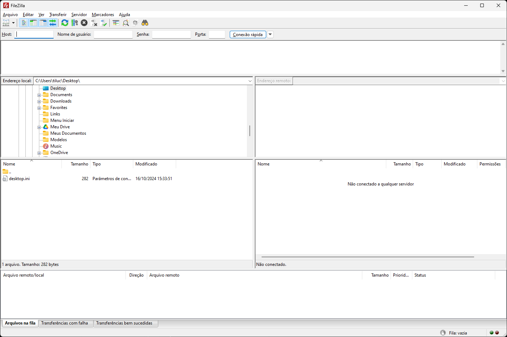
Tela inicial do FileZilla
Fonte: Senac EAD (2024)
Uma captura de tela mostrando a interface gráfica do FileZilla. Na parte
superior, há uma barra de título com ícones e um menu suspenso. No
centro, há
uma divisão no meio que separa a estrutura de arquivos em árvore do
computador
local e do servidor remoto. Abaixo, uma tabela estruturada com várias
linhas e
colunas contendo informações textuais (nome, data e status).
Explorando a interface do FileZilla
Após concluir a instalação do FileZilla, você já pode conectá-lo a um
servidor
remoto para transferir arquivos. O próximo passo é se familiarizar com o
layout de janelas do FileZilla. Para facilitar, veja a divisão da
interface em seções, destacadas na figura:
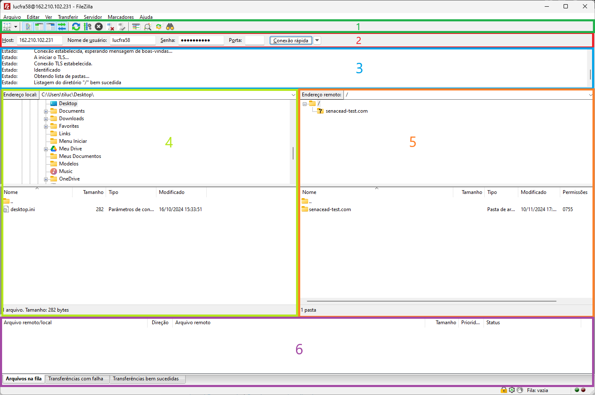
Tela inicial do FileZilla
Fonte: Senac EAD (2024)
Uma captura de tela mostrando a
interface
gráfica do FileZilla. A interface está dividida em seções, cada uma com
diferentes cores
com um valor numérico para referenciar cada seção de cima para baixo. A
numeração vai de
1 a 6 e cada número representa uma área destacada, sendo: 1) Barra de
ferramentas; 2)
Barra de conexão rápida; 3) Log de mensagens; 4) Painel local; 5) Painel do
servidor; 6)
Fila de transferência.
Portanto, há seis seções, sendo elas, respectivamente:
Barra de ferramentas (área verde)
Barra de conexão rápida (área vermelha)
Log de mensagens (área azul)
Painel local (área verde-claro)
Painel do servidor (área laranja)
Fila de transferência (área roxa)
No topo, há a barra de ferramentas (1) que serve de barra de acesso rápido
para as
principais opções do FileZilla. As mesmas opções podem ser acessadas pelo menu
de texto
acima, no qual aparecem as opções Arquivo, Editar, Ver,
Transferir, Servidor, Marcadores e Ajuda.
Abaixo da barra de ferramentas (1) há a barra de conexão rápida
(2), na
qual se pode informar o endereço do servidor remoto (host), o nome de
usuário, a
senha e a porta para estabelecer uma conexão com o servidor. Mais a diante,
volta-se a
essa barra.
Abaixo da barra de ferramentas (1) e da barra de conexão rápida
(2), está o
log de mensagens (3), que exibe mensagens relacionadas à
transferência e
conexão. Quando estabelecer uma conexão com o servidor remoto, por exemplo, será
informado se a conexão foi estabelecida com sucesso ou não.
Abaixo, você pode encontrar as listagens de arquivos. A coluna da esquerda
(painel
local, 4) exibe os arquivos e diretórios locais, ou seja, os arquivos e
as
pastas do computador que você está usando o FileZilla. A coluna da direita
(painel do
servidor, 5) exibe os arquivos e diretórios no servidor ao qual você
está
conectado. Ambas as colunas têm uma árvore de diretórios na parte superior e uma
listagem detalhada do conteúdo do diretório selecionado no momento na parte
inferior.
Você pode navegar facilmente em qualquer uma das árvores e listas clicando ao
redor como
em qualquer outro gerenciador de arquivos.
Na parte inferior da janela, está a fila de transferência (6), na qual são
listados os arquivos a serem transferidos e os já transferidos.
Agora que você já conhece a interface do FileZilla, o próximo passo é se conectar
com um
servidor remoto.
Estabelecendo conexão
Para estabelecer uma conexão com um servidor, é necessário ter as
credenciais
fornecidas pelo serviço de hospedagem, que incluem o endereço FTP, o
nome de
usuário e a senha. Esses dados geralmente se encontram no painel de
controle da
hospedagem, e cada serviço de hospedagem pode apresentá-los de maneira
diferente.
A figura exemplifica como os dados são fornecidos pela KingHost:
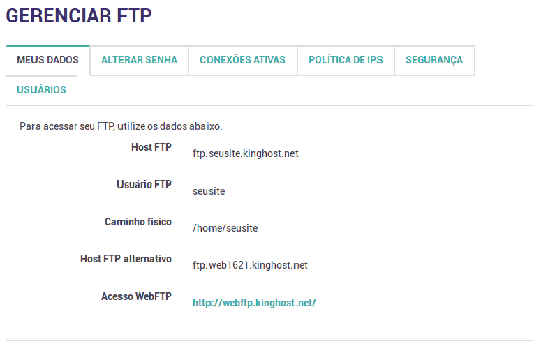
Exemplo de dados para conexão FTP
Fonte: KingHost (s. d.)
Tela do painel de controle de hospedagem da empresa KingHost, na qual se tem os
botões
de navegação no topo e o conteúdo logo abaixo. Os botões de navegação têm os
seguintes
textos, respectivamente: “Meus dados”, “Alterar senha”, “Conexões ativas”,
“Políticas de
IPs”, “Segurança” e “Usuários”. O conteúdo abaixo tem o seguinte texto: “Para
acessar
seu FTP, utilize os dados abaixo. Host FTP: ftp.seusite.kinghost.net – Usuário
FTP:
seusite – Caminho físico: /home/seusite – Host FTP alternativo:
ftp.web1621.kinghost.net
– Acesso WebFTP: http://webftp.kinghost.net/”.
Alguns provedores de hospedagem também oferecem interfaces web que
permitem
fazer o upload de arquivos diretamente pelo navegador, que também é uma forma de
transferir arquivos para um servidor remoto, embora essa opção possa ser
limitada para
sites com muitos arquivos.
Neste conteúdo, será utilizado o serviço de hospedagem gratuito oferecido pela
Freehostia. Durante a escrita deste material, foi criada uma conta de
teste com o
domínio senacead-test.com, sem qualquer custo, e você pode fazer o mesmo
caso o
serviço de hospedagem grátis ainda esteja disponibilizado. Caso o serviço não
esteja
mais disponível, você pode pesquisar por outras alternativas de hospedagem
gratuita.
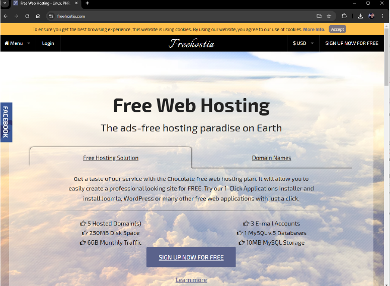
Site oficial da Freehostia
Fonte: Freehostia (c2024)
Na imagem, a tela inicial do site
https://www.freehostia.com/ com o título “Free Web Hosting: The ads-free hosting
Paradise on Earth” e abaixo há duas guias, “Free Hosting Solution” e “Domain
Names”. A
primeira guia está selecionada e tem abaixo uma breve apresentação textual da
solução de
hospedagem gratuita com o botão “SIGN UP NOW FOR FREE” no final.
Estes são os dados de conexão que serão utilizados para estabelecer
a
conexão – utilize seus próprios dados para seguir com essa prática:
Campo
Explicação
Host: 162.210.102.231
Normalmente, para acessar um site na internet,
configura-se o
DNS (domain name system) e associa-se o endereço
do
site (domínio) ao IP (internet protocol) da
hospedagem. No entanto, neste exemplo, não há um domínio
registrado que
aponte para o DNS da hospedagem. Portanto, a conexão será feita
diretamente ao servidor usando o endereço IP, sem a necessidade
de
passar pelo DNS.
Nome de usuário: lucfra58
Nome de usuário fornecido pela hospedagem.
Senha: 7PjU#.J3
Senha configurada no painel de controle da hospedagem.
Porta: 21
A menos que as credenciais fornecidas pelo serviço de hospedagem
especifiquem uma determinada porta para usar, você pode deixar o
campo
Porta vazio e o FileZilla tentará estabelecer a conexão
pela
porta 21.
Dados de conexão Fonte: Senac
EAD (2024)
Após preencher os campos, clique em Conexão rápida e o
FileZilla
tentará se conectar ao servidor – você pode acompanhar o log completo na
área
abaixo da barra de conexão rápida. Se tudo funcionar bem, você notará que a
“coluna” da
direita (painel do servidor) mudou para exibir uma lista de arquivos e
diretórios. O
nome do diretório remoto atual é listado no campo de edição no topo. Abaixo
disso, você
verá a árvore de diretórios remotos. Abaixo do diretório remoto, há uma lista do
conteúdo do diretório remoto atual.
Veja o GIF demonstrando como estabelecer uma conexão rápida com
o
FileZilla:
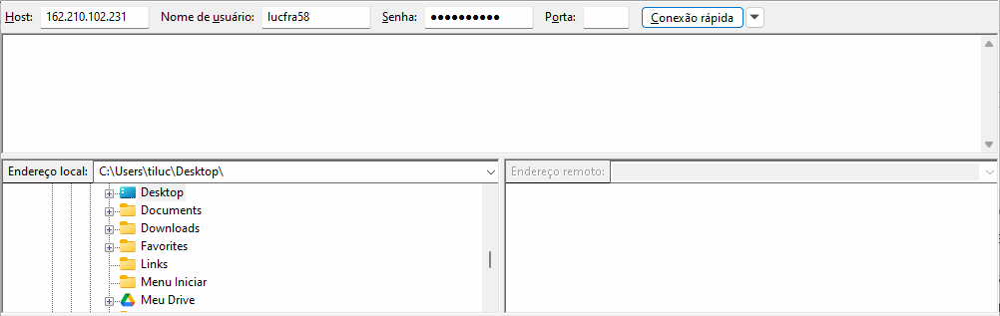
GIF mostrando o uso do software
FileZilla. Os
campos Host, Nome do usuário e Senha estão preenchidos e o botão “Conexão
rápida” é
pressionado. Abaixo, a interface exibe o log e logo abaixo duas áreas
principais: à
esquerda, os arquivos locais do computador, e à direita, os arquivos no servidor
remoto.
Quando a conexão é estabelecida, a área de arquivos do servidor remoto, antes em
branco,
passa a listar a estrutura de pastas do servidor.
Veja brevemente como estabelecer uma conexão rápida com o FileZilla:
Com os campos Host, Nome do usuário e Senha preenchidos e o
botão Conexão rápida
pressionado, abaixo, a interface exibe o log e, logo abaixo, há duas áreas
principais: à
esquerda, os arquivos locais do computador; à direita, os arquivos no servidor
remoto.
Quando a conexão é estabelecida, a área de arquivos do servidor remoto, antes em
branco,
passa a listar a estrutura de pastas do servidor.
Após estabelecer uma conexão rápida, os dados ficarão salvos no
histórico.
Para estabelecer a conexão com os mesmos dados, basta clicar na seta ao lado do
botão
Conexão rápida e selecionar a conexão, conforme a imagem a seguir.
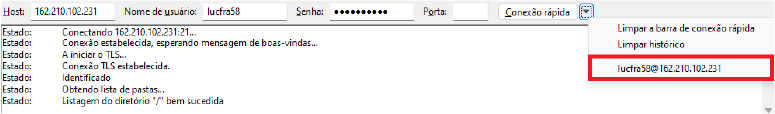
Histórico de conexões rápidas do
FileZilla Fonte: Senac EAD (2024)
Na imagem, a barra de conexão rápida
do
FileZilla com host, nome de usuário e senha preenchidos. Ao lado desses campos,
o botão
Conexão rápida e um botão com uma seta apontando para baixo, que foi pressionado
revelando uma lista de opções, sendo elas: Limpar a barra de conexão rápida,
Limpar
histórico e lucfra58@162.210.102.231. Essa área com as opções está destacada em
vermelho.
Transferência de arquivos
Você pode carregar ou baixar um arquivo clicando duas vezes nele. Ele será
adicionado à
fila de transferência e a transferência será iniciada automaticamente. Para
transferir
diretórios e/ou vários arquivos, selecione-os e clique com o botão direito do
mouse na seleção. Então você pode clicar em Upload no menu
pop-up
que é revelado.
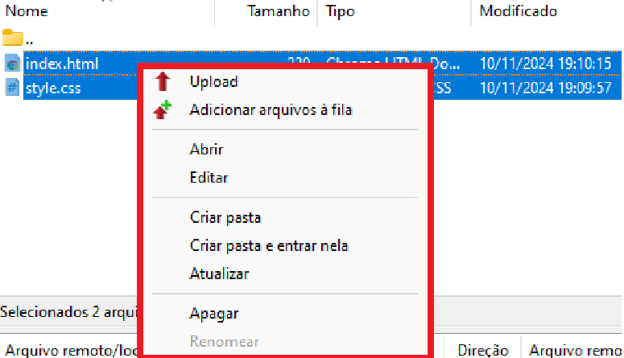
Menu pop-up no painel
local do
FileZilla Fonte: Senac EAD (2024)
Na imagem, o painel local do FileZilla
focado
com dois arquivos sendo listados: “index.html” e “style.css”. Ambos estão
selecionados e
um menu de pop-up aparece sobre eles destacado em vermelho com as opções Upload,
Adicionar arquivos à fila, Abrir, Editar, Criar pasta, Criar pasta e entrar
nela,
Atualizar, Apagar e Renomear.
Você também pode arrastar os arquivos de um lado e soltá-los no
outro lado.
Geralmente, a pasta na qual o site é publicado se chama “public_html” ou
“www”,
mas isso não é uma regra. Tudo depende do provedor de hospedagem. Nesse exemplo,
não se
tem a pasta “public_html” nem a “www”, e sim a pasta “senacead-test.com”, que é
o nome
do domínio informado ao contratar o serviço da hospedagem. Então serão
selecionados
alguns arquivos e arrastados para essa pasta.
Veja o GIF demonstrando como fazer a transferência de arquivos
no
FileZilla:
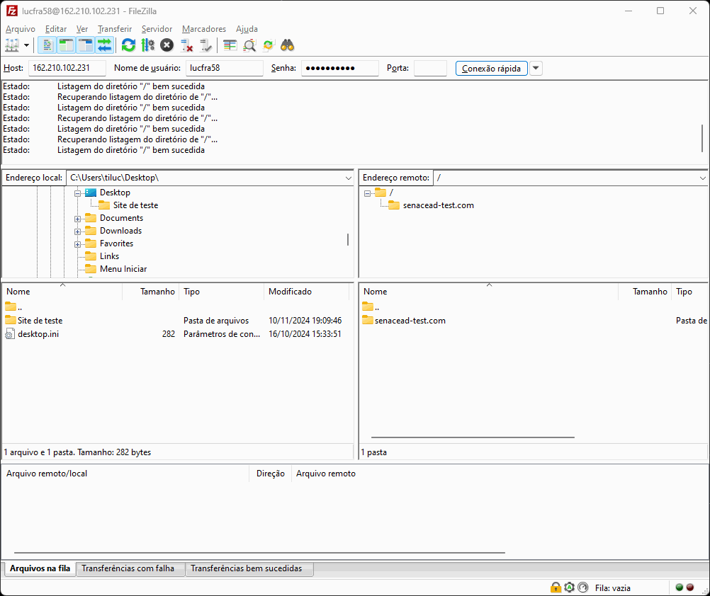
Na imagem, o painel local do FileZilla
focado
com dois arquivos sendo listados: “index.html” e “style.css”. Ambos estão
selecionados e
um menu de pop-up aparece sobre eles destacado em vermelho com as opções Upload,
Adicionar arquivos à fila, Abrir, Editar, Criar pasta, Criar pasta e entrar
nela,
Atualizar, Apagar e Renomear.
Veja brevemente como fazer a transferência de arquivos no FileZilla:
A interface exibe duas áreas principais: à esquerda, os arquivos locais do
computador; à
direita, os arquivos no servidor remoto. Acesse uma pasta nos arquivos locais e
selecione dois arquivos. Após isso, arraste os dois arquivos para a área do servidor
remoto, iniciando a transferência de arquivos. Na parte inferior da tela, o
log
apresenta mensagens de status confirmando o sucesso da operação na parte
inferior.
Ao arrastar os arquivos, o FileZilla iniciará a transferência
automaticamente e você poderá acompanhar o progresso na lista de transferências.
Caso
haja alguma interrupção na conexão, por exemplo, o FileZilla automaticamente
retomará a
transferência do ponto onde foi interrompida assim que a conexão for
restabelecida – ou
seja, ele continuará de onde parou. Após a conclusão, os arquivos estarão
disponíveis no
servidor e prontos para serem acessados pelo público.
Você também pode conferir se os arquivos foram transferidos por meio do painel de
controle da hospedagem.
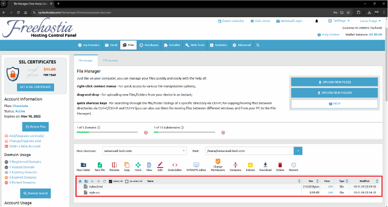
Painel de controle da Freehostia
Fonte: Senac EAD (2024)
Na imagem, o painel de controle da
hospedagem
Freehostia com um menu lateral à esquerda e o conteúdo na direita. O conteúdo
apresentado tem o título “File Manager” e um texto descrevendo como usar o
gerenciador
de arquivos. Abaixo desse conteúdo, uma área destacada em vermelho que apresenta
uma
tabela que lista os arquivos “index.html” e “style.css” com o tamanho total de
cada
arquivo, suas permissões, tipo e data e hora de modificação.
Organização de arquivos
Além de realizar o upload, o FileZilla também permite que você organize
seus
arquivos e suas pastas no servidor. É possível criar diretórios, renomear
arquivos,
mover conteúdos entre pastas e até deletar arquivos que não são mais
necessários. Para
isso, clique com o botão direito em qualquer arquivo ou pasta no painel remoto e
selecione a ação desejada.
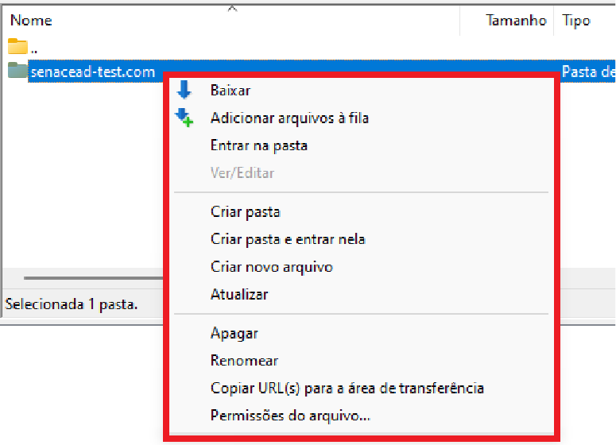
Acessando opções de gerenciamento
de
pastas/arquivos no FileZilla Fonte: Senac EAD (2024)
Na imagem, a interface do FileZilla
com a
conexão já estabelecida em um servidor remoto. Sendo assim, o lado esquerdo
(Painel do
servidor) tem um conteúdo apresentado. Esse conteúdo é a pasta senacead-test.com
sendo
selecionada com um menu de pop-up destacado em vermelho sendo revelado sobre ela
com as
opções Baixar, Adicionar arquivos à fila, Entrar na pasta, Ver/editar, Criar
pasta,
Criar pasta e entrar nela, Criar novo arquivo, Atualizar, Apagar, Renomear,
Copiar
URL(s) para a área de transferência e Permissões do arquivo...
Desconectando do servidor
Após concluir a transferência de arquivos, desconecte-se do servidor para evitar
conexões
abertas, que podem representar riscos de segurança. Para isso, clique em
Servidor
> Desconectar ou clique no ícone de servidor com X disponível na barra de
ferramentas.
Veja o GIF demonstrando como desconectar do servidor remoto:
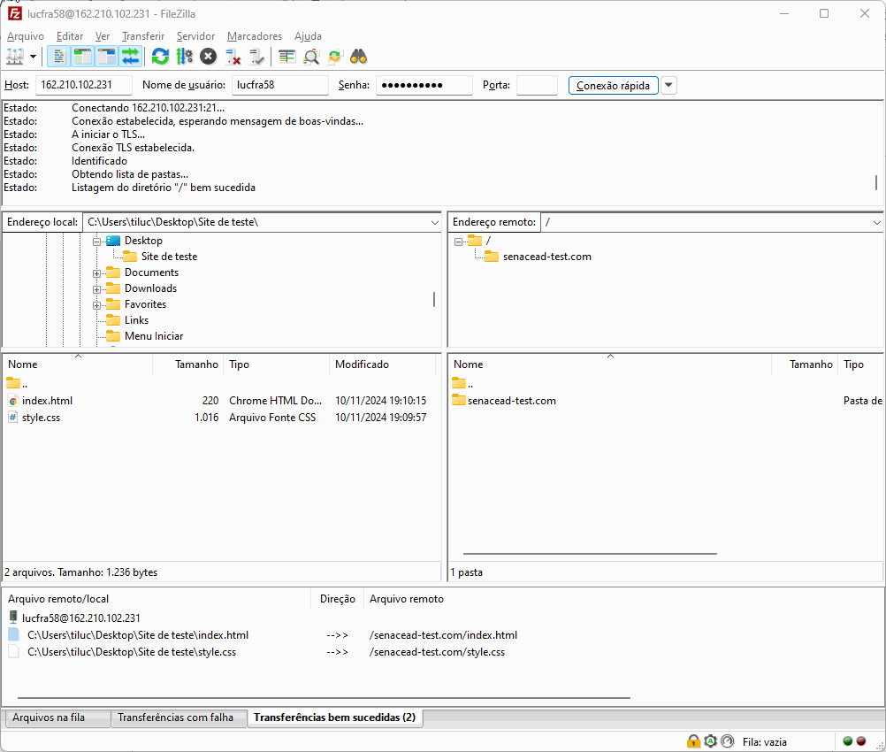
GIF mostrando o uso do software
FileZilla. A
interface exibe duas áreas principais: à esquerda, os arquivos locais do
computador, e à
direita, os arquivos no servidor remoto. O usuário transferiu arquivos de uma
pasta
local para uma pasta no servidor remoto, com mensagens de status confirmando o
sucesso
da operação na parte inferior. O mouse se posiciona sobre a opção Servidor
localizada na
barra de opções no topo da tela e revela, por meio de um menu flutuante, a opção
Desconectar. Esse menu é dispensado e o mouse se posiciona sobre o ícone de
desconectar
localizado abaixo da barra de opções.
Veja brevemente como se desconectar do servidor remoto:
A interface exibe duas áreas principais: à esquerda, os arquivos locais do computador; à
direita, os arquivos no servidor remoto. Transfira os arquivos de uma pasta local para
uma pasta no servidor remoto, com mensagens de status confirmando o sucesso da operação
na parte inferior. Posicione o mouse sobre a opção Servidor localizada na barra de
opções no topo da tela, revelando, por meio de um menu flutuante, a opção Desconectar.
Dispense esse menu e posicione o mouse sobre o ícone de desconectar localizado abaixo da
barra de opções.
Agora que você entendeu como a transferência de arquivos funciona,
veja, na
prática, como realizar esse processo passo a passo.
Clique ou toque para assistir ao vídeo.
Dicas de segurança e solução de problemas comuns
Agora veja alguns problemas comuns que podem ocorrer ao usar o FileZilla,
especialmente
se as configurações do servidor ou da rede local interferirem na conexão.
Clique ou toque para visualizar o conteúdo.
Verifique as credenciais e a configuração da rede. Em alguns
casos, o
firewall ou o antivírus podem bloquear a conexão FTP.
Se você não consegue modificar um arquivo no servidor, pode ser
que as
permissões estejam restritas. Verifique com o provedor de
hospedagem
para ajustar as permissões – em alguns casos, você pode corrigir
isso
pelo painel de controle da hospedagem.
Se o seu servidor suportar os protocolos SFTP e FTPS, opte por
eles, pois
oferecem maior segurança com criptografia dos dados
transferidos.
Encerramento
A publicação de aplicações web é um processo essencial para tornar
sites e
sistemas acessíveis ao público. O uso do FTP e ferramentas como o FileZilla
proporciona
uma solução prática e segura para a transferência de arquivos ao publicar
aplicações na
web. Desde a instalação e conexão até a organização e segurança, o
conhecimento
desses processos capacita desenvolvedores a gerenciar seus sites com
eficiência.
A familiaridade com o FileZilla e as boas práticas de segurança, como
desconectar após
cada sessão e solucionar problemas comuns, garantem que as publicações sejam
realizadas
de forma tranquila e com baixo risco.
Como você pôde ver, a maioria das tarefas pode ser concluída de várias maneiras.
As
maneiras escolhidas para este conteúdo foram as mais claras. Com tempo e
experiência,
você encontrará maneiras muito mais rápidas de realizar as tarefas para atuar em
um
ambiente de hospedagem profissional com muito mais confiança e expertise.